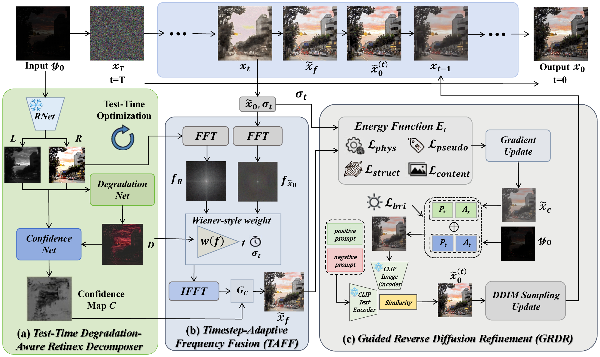
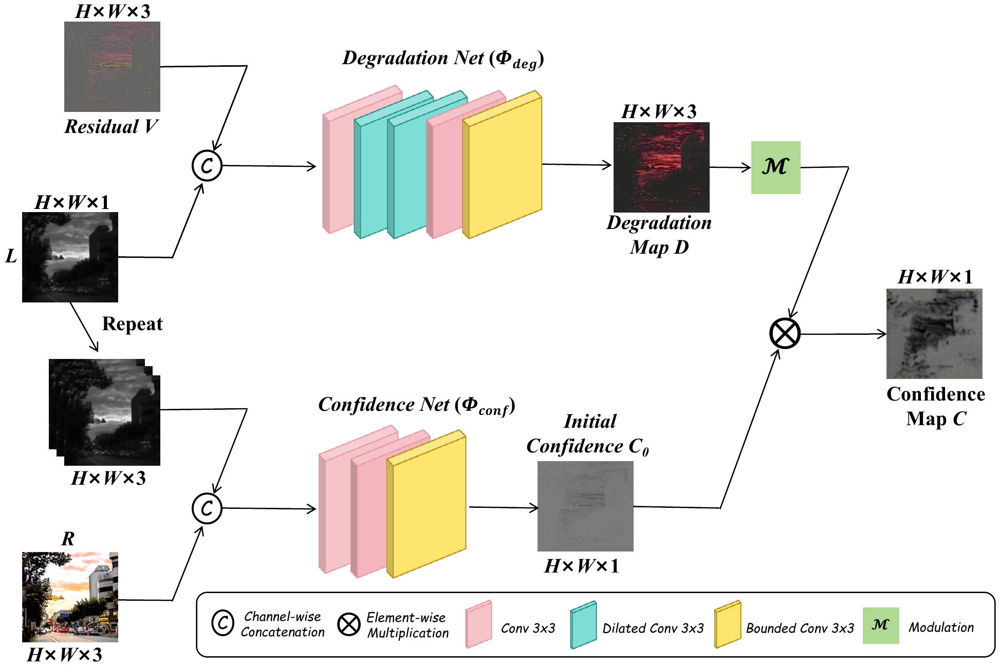
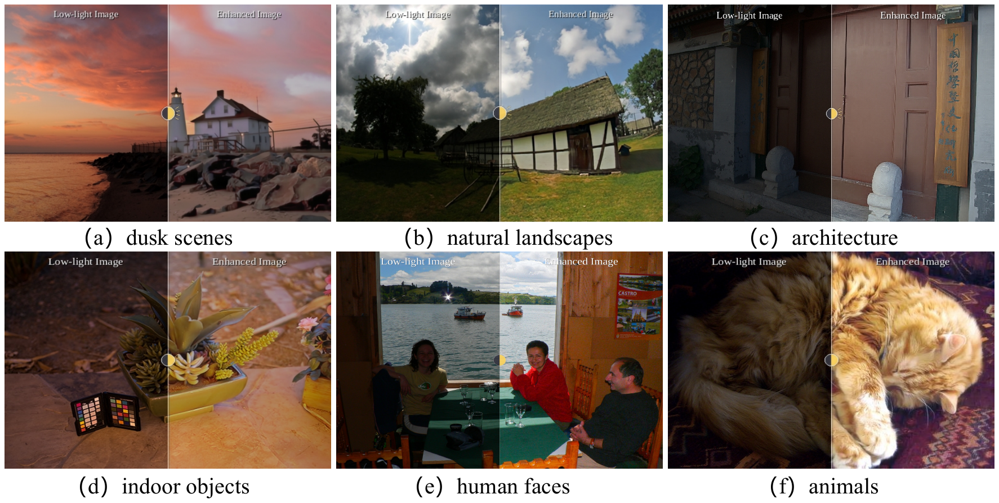
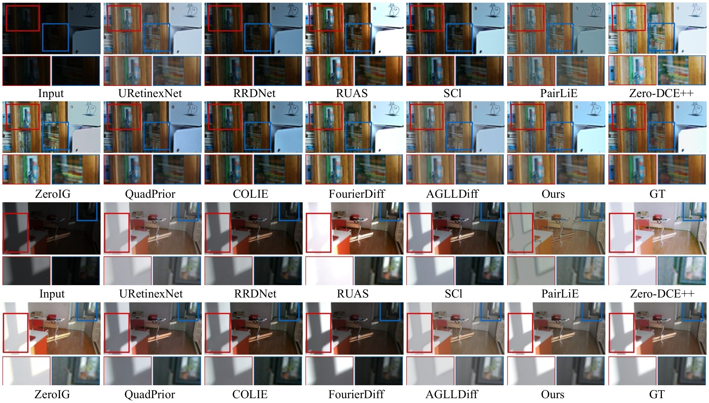
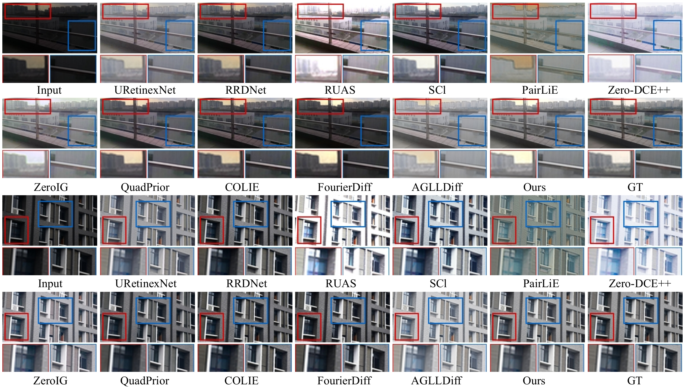
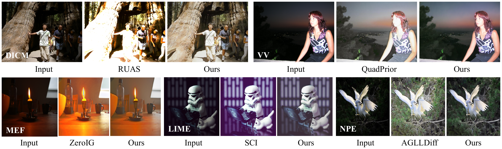
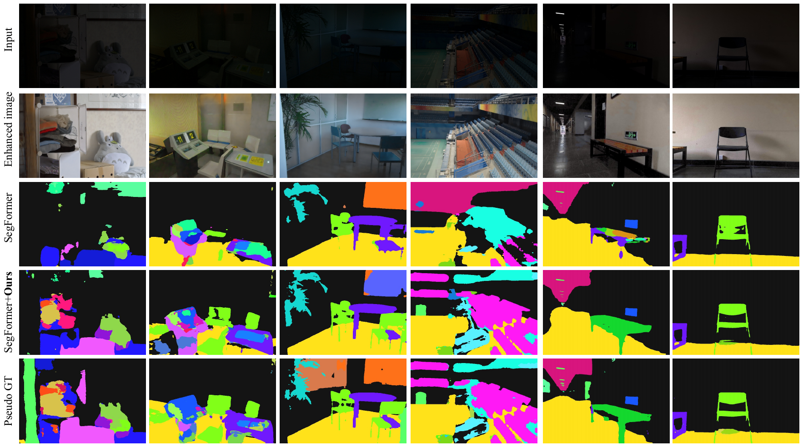
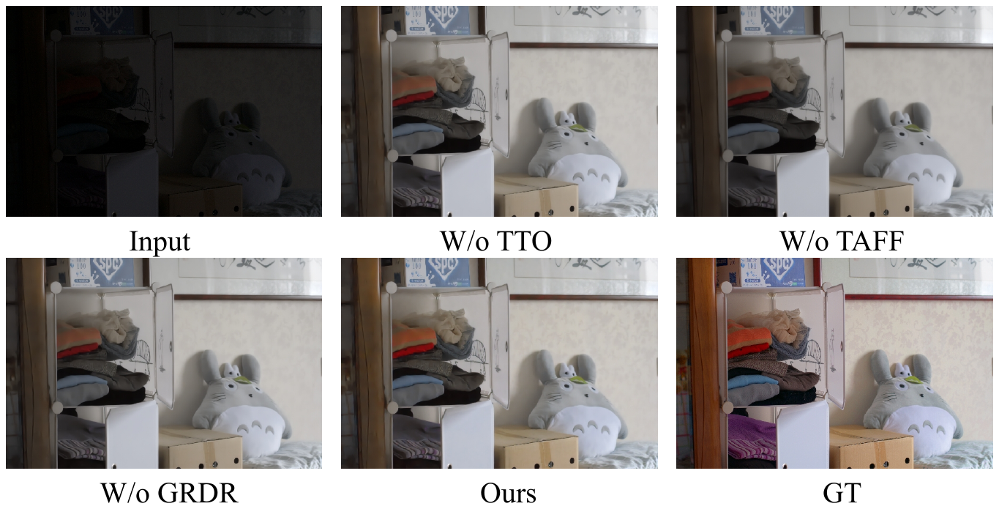

IEEE TCSVT (CCF-B, SCI Q1, IF:11.1)
Anhui University
Existing diffusion-based enhancement methods provide strong generative capability for Low-light image enhancement (LLIE), yet they either rely on paired supervision or lack reliable scene constraints in zero-shot settings, often leading to structural inconsistency and color drift. Motivated by conventional Retinex models, which offer physically interpretable priors that can serve as reliable scene constraints yet struggle with mixed degradations in real-world scenarios, we propose DARD, a zero-shot Degradation-Aware Retinex-guided Diffusion framework for LLIE. DARD first extracts image-specific physical priors from the degraded input through a test-time degradation-aware Retinex decomposition, thereby providing reliable structural guidance for zero-shot restoration. It then injects these priors into reverse diffusion through a timestep-adaptive frequency fusion strategy to balance structural anchoring and detail generation. Finally, a guided reverse refinement process with physical consistency and Contrastive Language-Image Pre-training (CLIP)-based semantic guidance is introduced to suppress structural artifacts and semantic drift during sampling. Extensive experiments show that DARD achieves strong distortion and perceptual performance and consistently outperforms existing zero-shot baselines across multiple real-world low-light benchmarks. To further validate the practical utility of our method for downstream applications, we evaluated its impact on semantic segmentation. Experiments demonstrate that images enhanced by DARD achieve a 28.10% relative improvement in mIoU over AGLLDiff.


| Method | LOLv1 | LOLv2-real | ||||
|---|---|---|---|---|---|---|
| PSNR ↑ | SSIM ↑ | LPIPS ↓ | PSNR ↑ | SSIM ↑ | LPIPS ↓ | |
| AGLLDiff(AAAI'25) | 19.83 | 0.814 | 0.194 | 19.99 | 0.844 | 0.192 |
| Ours | 21.14 | 0.835 | 0.143 | 22.18 | 0.877 | 0.135 |
Selected zero-shot comparison on LOLv1 and LOLv2-real.

| Method | Type | LOLv1 | LOLv2-real | LSRW-Huawei | LSRW-Nikon | ||||||||
|---|---|---|---|---|---|---|---|---|---|---|---|---|---|
| PSNR ↑ | SSIM ↑ | LPIPS ↓ | PSNR ↑ | SSIM ↑ | LPIPS ↓ | PSNR ↑ | SSIM ↑ | LPIPS ↓ | PSNR ↑ | SSIM ↑ | LPIPS ↓ | ||
| KinD(MM'19) | S | 16.55 | 0.429 | 0.405 | 15.11 | 0.402 | 0.426 | 17.35 | 0.530 | 0.544 | 14.69 | 0.471 | 0.469 |
| URetinexNet(CVPR'22) | S | 19.84 | 0.824 | 0.121 | 21.09 | 0.858 | 0.144 | 19.14 | 0.553 | 0.419 | 16.53 | 0.452 | 0.264 |
| GSAD(NeurIPS'23) | S | 22.98 | 0.851 | 0.103 | 20.19 | 0.847 | 0.178 | 20.43 | 0.583 | 0.407 | 17.36 | 0.506 | 0.222 |
| DiffLL(Siggraph Asia'23) | S | 26.34 | 0.845 | 0.217 | 28.86 | 0.876 | 0.207 | 18.06 | 0.417 | 0.482 | 15.94 | 0.359 | 0.402 |
| CUGD(TCSVT'25) | S | 22.72 | 0.865 | 0.111 | 23.17 | 0.882 | 0.112 | 19.64 | 0.588 | 0.327 | 16.33 | 0.468 | 0.211 |
| RUAS(CVPR'21) | U | 16.41 | 0.500 | 0.270 | 15.33 | 0.488 | 0.310 | 15.84 | 0.559 | 0.488 | 12.32 | 0.488 | 0.383 |
| SCI(CVPR'22) | U | 13.65 | 0.529 | 0.344 | 16.70 | 0.552 | 0.303 | 14.63 | 0.409 | 0.387 | 14.65 | 0.411 | 0.239 |
| PairLiE(CVPR'23) | U | 16.99 | 0.699 | 0.454 | 18.45 | 0.717 | 0.511 | 17.59 | 0.539 | 0.532 | 14.45 | 0.418 | 0.544 |
| Zero-DCE++(TPAMI'21) | U | 14.72 | 0.555 | 0.415 | 12.98 | 0.487 | 0.470 | 14.18 | 0.415 | 0.415 | 11.09 | 0.368 | 0.360 |
| ZeroIG(CVPR'24) | U | 18.57 | 0.739 | 0.272 | 18.13 | 0.751 | 0.248 | 19.84 | 0.591 | 0.481 | 16.62 | 0.474 | 0.339 |
| QuadPrior(CVPR'24) | U | 18.79 | 0.780 | 0.215 | 20.47 | 0.811 | 0.198 | 18.30 | 0.584 | 0.427 | 14.83 | 0.472 | 0.326 |
| COLIE(ECCV'24) | U | 13.76 | 0.510 | 0.356 | 15.07 | 0.527 | 0.322 | 14.77 | 0.414 | 0.401 | 12.88 | 0.384 | 0.278 |
| FourierDiff(CVPR'24) | U | 17.58 | 0.654 | 0.284 | 16.87 | 0.645 | 0.293 | 16.92 | 0.511 | 0.366 | 13.89 | 0.398 | 0.267 |
| RRDNet(ICME'20) | U | 11.00 | 0.480 | 0.337 | 13.48 | 0.504 | 0.295 | 12.95 | 0.375 | 0.424 | 13.35 | 0.370 | 0.271 |
| AGLLDiff(AAAI'25) | U | 19.83 | 0.814 | 0.194 | 19.99 | 0.844 | 0.192 | 19.11 | 0.593 | 0.423 | 14.74 | 0.460 | 0.275 |
| Ours | U | 21.14 | 0.835 | 0.143 | 22.18 | 0.877 | 0.135 | 20.46 | 0.598 | 0.380 | 17.03 | 0.492 | 0.236 |
Paired benchmark comparison. S: supervised; U: unsupervised / zero-shot.
| Method | DICM | MEF | LIME | VV | NPE | ||||||||||
|---|---|---|---|---|---|---|---|---|---|---|---|---|---|---|---|
| Q-Align ↑ | MUSIQ ↑ | LOE ↓ | Q-Align ↑ | MUSIQ ↑ | LOE ↓ | Q-Align ↑ | MUSIQ ↑ | LOE ↓ | Q-Align ↑ | MUSIQ ↑ | LOE ↓ | Q-Align ↑ | MUSIQ ↑ | LOE ↓ | |
| KinD | 2.46 | 49.38 | 317.45 | 2.96 | 49.84 | 246.35 | 2.46 | 48.69 | 218.36 | 2.57 | 32.47 | 264.32 | 1.64 | 48.74 | 231.57 |
| URetinexNet | 3.56 | 62.28 | 222.73 | 3.63 | 65.96 | 141.84 | 3.36 | 59.93 | 139.43 | 3.01 | 40.46 | 125.36 | 3.47 | 60.11 | 198.76 |
| GSAD | 3.81 | 60.36 | 194.46 | 3.62 | 61.76 | 126.83 | 3.28 | 58.64 | 126.18 | 3.22 | 47.95 | 122.63 | 3.56 | 63.49 | 122.63 |
| DiffLL | 3.43 | 58.27 | 191.31 | 3.27 | 62.58 | 142.13 | 3.08 | 57.64 | 151.82 | 3.59 | 63.59 | 164.82 | 3.27 | 65.63 | 171.62 |
| CUGD | 3.90 | 61.44 | 99.03 | 3.57 | 63.08 | 99.74 | 3.26 | 60.37 | 120.41 | 3.19 | 61.53 | 129.31 | 3.47 | 67.06 | 139.12 |
| RUAS | 2.38 | 53.78 | 525.44 | 2.70 | 55.58 | 311.79 | 2.11 | 55.43 | 334.76 | 2.34 | 30.23 | 384.55 | 1.66 | 55.86 | 614.00 |
| SCI | 3.40 | 58.50 | 196.53 | 3.50 | 62.59 | 139.03 | 3.07 | 59.06 | 143.12 | 3.12 | 33.92 | 153.43 | 2.79 | 62.98 | 140.04 |
| PairLiE | 1.93 | 43.49 | 416.24 | 1.81 | 39.62 | 374.56 | 1.86 | 43.83 | 463.88 | 2.71 | 33.67 | 255.22 | 1.88 | 41.64 | 351.40 |
| Zero-DCE++ | 2.26 | 54.16 | 290.52 | 2.89 | 58.22 | 138.54 | 1.93 | 54.58 | 190.38 | 2.24 | 26.29 | 162.29 | 1.62 | 57.36 | 191.99 |
| ZeroIG | 2.48 | 52.62 | 586.10 | 2.65 | 54.92 | 302.99 | 2.22 | 52.72 | 278.06 | 2.13 | 28.61 | 497.85 | 1.97 | 56.73 | 737.68 |
| QuadPrior | 3.79 | 62.15 | 325.27 | 3.64 | 65.11 | 340.29 | 3.41 | 58.62 | 385.17 | 3.15 | 27.32 | 258.16 | 3.52 | 64.83 | 141.63 |
| COLIE | 3.80 | 61.58 | 208.60 | 3.59 | 63.57 | 99.69 | 3.50 | 60.80 | 135.77 | 3.24 | 41.35 | 124.70 | 3.65 | 66.81 | 121.44 |
| FourierDiff | 3.34 | 56.77 | 231.00 | 3.18 | 60.09 | 106.67 | 3.09 | 59.21 | 141.07 | 2.88 | 56.80 | 128.06 | 3.27 | 63.95 | 259.84 |
| RRDNet | 3.70 | 62.04 | 159.38 | 3.48 | 62.89 | 125.54 | 3.52 | 60.11 | 117.89 | 3.38 | 41.50 | 133.01 | 3.73 | 67.09 | 138.25 |
| AGLLDiff | 3.80 | 65.95 | 242.92 | 3.52 | 65.75 | 182.71 | 3.29 | 60.70 | 193.16 | 2.76 | 57.83 | 185.69 | 3.21 | 67.03 | 171.19 |
| Ours | 3.82 | 66.33 | 189.73 | 3.76 | 67.27 | 97.28 | 3.53 | 64.30 | 111.88 | 3.54 | 59.65 | 122.37 | 3.80 | 67.39 | 111.15 |
No-reference image quality comparison. Q-Align reports the quality score.
| Method | LOLv1 | LOLv2-real | ||||
|---|---|---|---|---|---|---|
| aAcc ↑ | mIoU ↑ | mAcc ↑ | aAcc ↑ | mIoU ↑ | mAcc ↑ | |
| SegFormer | 70.94 | 18.81 | 30.99 | 81.36 | 31.33 | 43.15 |
| SegFormer +AGLLDiff | 74.94 | 21.32 | 41.42 | 81.66 | 28.09 | 44.16 |
| SegFormer +Ours | 78.90 | 27.31 | 45.58 | 85.31 | 35.13 | 50.75 |
| Improve (%) | +5.28 | +28.10 | +10.04 | +4.47 | +25.06 | +14.92 |
Downstream semantic segmentation. Reference masks are predictions on aligned normal-light images. Improvement is relative to SegFormer + AGLLDiff.





@article{cai2026dard,
title={DARD: Zero-Shot Degradation-Aware Retinex-Guided Diffusion for Low-Light Image Enhancement},
author={Cai, Wenjie and Yang, Yuezhe and Xia, Jianyang and Dong, Xingbo and Jin, Zhe},
journal={IEEE Transactions on Circuits and Systems for Video Technology},
year={2026},
doi={10.1109/tcsvt.2026.3735712},
url={https://doi.org/10.1109/tcsvt.2026.3735712},
note={Early Access}
}